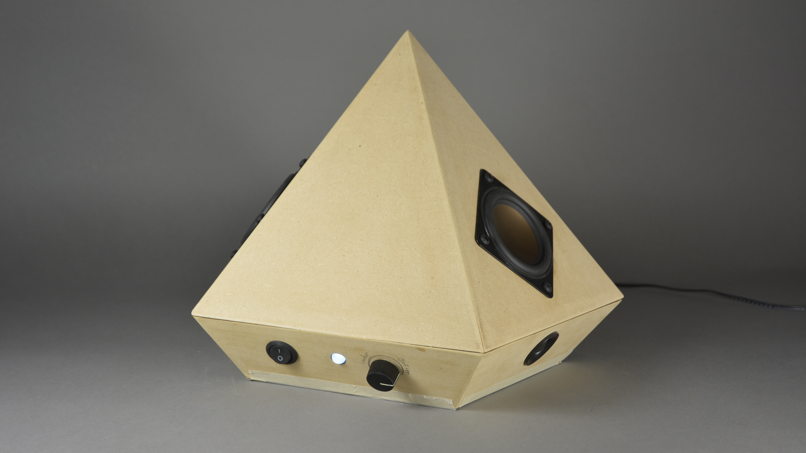
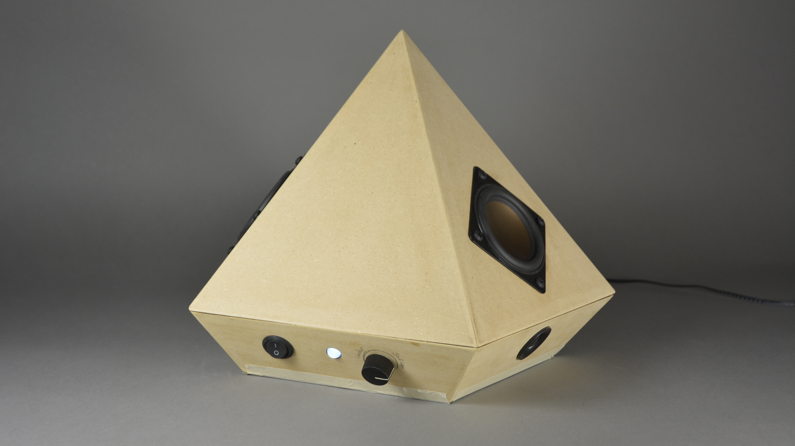
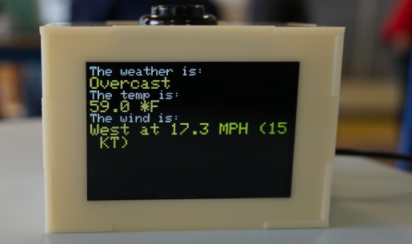
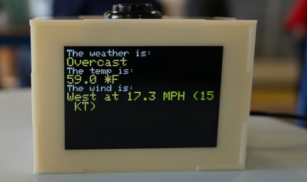
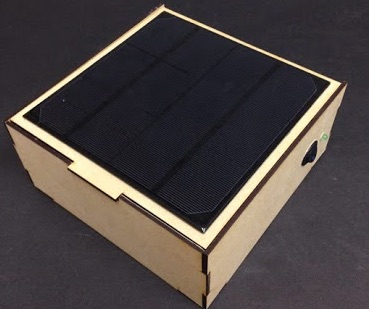
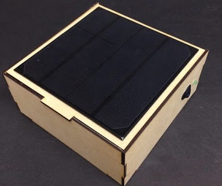
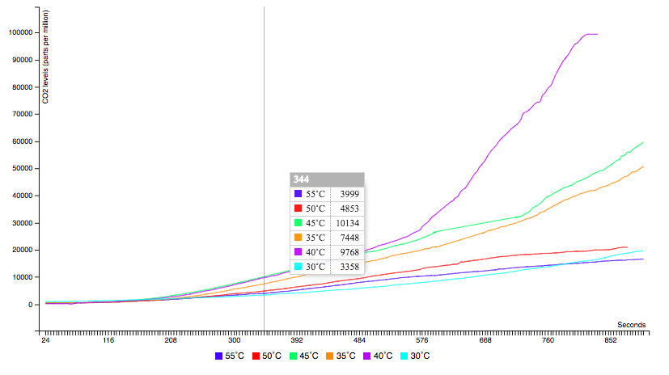
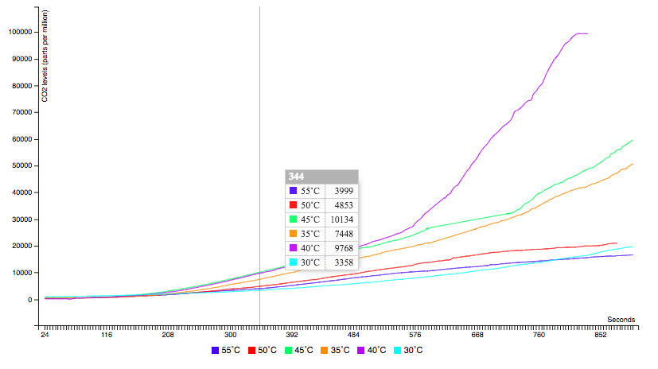
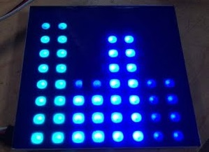
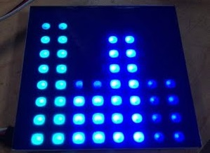

<title> lick wilmerding high School - technical arts :
circuits</title>
</head>
<body>
<p id = "about">
<p id = "projects ">
</body>
circuits and electronics: analog and digital (fall 2016)
circuits and electronics: device invention (spring 2017)
<br>
i took two semester long courses focused on circuits and electronics in my sophomore year at lick-wilmerding high school. in circuits 1, we learned about the basic skills to design and build an analog and digital (programmable) circuit using arduino. in circuits 2, we continued to develop our skills with designing and building electronic devices and circuits.
<br>
in all our projects from these two classes, we learned the importance of time management, perserverance and prototyping. through time management, we were able to make sure that our projects would actually get done on time. perserverance was super important, especially when we had to trouble-shoot our code or look for small mistakes in our circuits.
</p>
circuits and electronics: device invention (spring 2017)
<br>
i took two semester long courses focused on circuits and electronics in my sophomore year at lick-wilmerding high school. in circuits 1, we learned about the basic skills to design and build an analog and digital (programmable) circuit using arduino. in circuits 2, we continued to develop our skills with designing and building electronic devices and circuits.
<br>
in all our projects from these two classes, we learned the importance of time management, perserverance and prototyping. through time management, we were able to make sure that our projects would actually get done on time. perserverance was super important, especially when we had to trouble-shoot our code or look for small mistakes in our circuits.
<p id = "projects ">
here are the projects i worked on (click to see process, hover to see summary):
<ul>
</ul>
</p>
<ul>
<li>
speaker project
</li>
For the speaker Project, we created a speaker using resistors, transistors, capacitors, inductors, leds, speakers, tweeters, and wires. we prototyped with mdf, cardstock and used breadboards in addition to arduinos. 
For the speaker Project, we created a speaker using resistors, transistors, capacitors, inductors, leds, speakers, tweeters, and wires. we prototyped with mdf, cardstock and used breadboards in addition to arduinos. 
<li> wireless project (no process link)
</li>
for the wireless project, we had to design a device that communicates over one of the following protocols: radiofrequency, wifi, bluetooth, or sms. using a photon particle and adafruit, i decided to make a screen that displayed the weather, temperature and muni (public transportation) time for my stop utilizing weather and muni apis. i lasercutted the enclosure out of acrylic. 
for the wireless project, we had to design a device that communicates over one of the following protocols: radiofrequency, wifi, bluetooth, or sms. using a photon particle and adafruit, i decided to make a screen that displayed the weather, temperature and muni (public transportation) time for my stop utilizing weather and muni apis. i lasercutted the enclosure out of acrylic. 
<li>solar project (no process link)
</li>
for the solar project, we had to design a small portable solar device and understand the requirements for a basic solar charging system. i created a charging station- the enclosure was laser cut 1/8 inch mdf. 
for the solar project, we had to design a small portable solar device and understand the requirements for a basic solar charging system. i created a charging station- the enclosure was laser cut 1/8 inch mdf. 
<li>data visualization project (link is to our
interactive
graph)
</li>
here is our chemistry report if you want to check it out
for the data visualization project, my group was able to combine our chemistry project with our circuits project. we created an interactive graph that would plot out the results of our chemistry experiment on the ideal temperature for yeast growth. 
for the data visualization project, my group was able to combine our chemistry project with our circuits project. we created an interactive graph that would plot out the results of our chemistry experiment on the ideal temperature for yeast growth. 
<li>audio reactive visualizer project
(link is to video of visualizer
running)
</li>
for the audio reactive visualizer project, I created a audio reactive neopixel visualizer. create an audio reactive visualizer. using arduino and a neopixel, I changed the code so that when a certain frequency was played, the led columns would peak up. 
for the audio reactive visualizer project, I created a audio reactive neopixel visualizer. create an audio reactive visualizer. using arduino and a neopixel, I changed the code so that when a certain frequency was played, the led columns would peak up. 